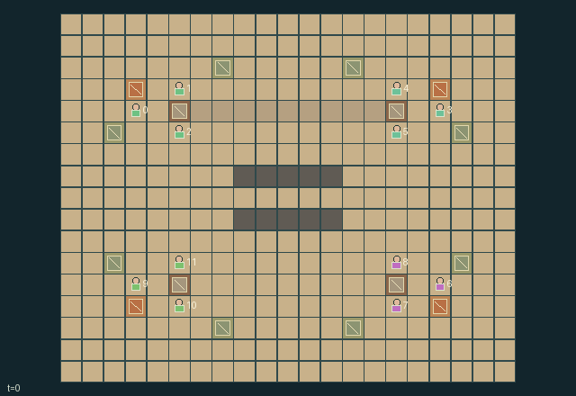

GI218 · Ropeway Commons

Move extracted stone and ore to other crews' villages while choosing between hand-carry routes and a shared, repairable ropeway; leave infrastructure and depleted deposits persistent through the 512-step window.
Identity and original contract
12 independently actionable roles; 28 discrete commands per role; 671 native observation columns per role; original horizon 512 steps. Declared per-step reward range: -2 to 20. Observation regime: fully_observable.
Source SHA-256: 92695bd8eb6cd6e635e053ef152bf22ecb92b0d148a78c8246dcdd11a1844f0d
The objective, rewards, population, map and horizon remain original. A preview is not a success claim.
Objective and gameplay
Move extracted stone and ore to other crews' villages while choosing between hand-carry routes and a shared, repairable ropeway; leave infrastructure and depleted deposits persistent through the 512-step window.
Each pylon supports both incident loaded spans. A second crew loading its carrier can overload a neighbor's transport; a hauler's temporary brace, permanent counterweight, unload or reroute changes both crews' next feasible movements. Material and tool handoffs physically change a neighbor's inventory and capabilities.
- Four three-person crews share a square ropeway and foreign-village delivery goals. Crew numbers and current tools are native actor attributes.
- Move on block terrain. Rock blocks foot travel, while the central gap and cable routes permit hand-carry alternatives. Occupied or contested cells stop movement.
- Pick miners extract stone/ore; anyone gathers fibre. Spanner riggers craft cable, install pylons and repair anchors. Yoke haulers install or reclaim counterweights and brace.
- Each carrier holds one stone or ore. Load, unload and reverse actions name the span and require distance at most one from its real current position.
- Every incident loaded carrier adds two tension to a shared pylon. A gust adds one. Support is two plus counterweights plus this step's braces.
- Overloaded anchors stall their adjacent carriers and lose health every third tick. Zero-health anchors need repair; their installed structures persist.
- Delivering consumes a unit at another crew's depot. The courier, origin crew and recipient crew receive distinct native rewards; material and energy costs are explicit.
- The public map shows installed and broken cable routes. Wait recovers two energy; rest recovers four. H=512 truncates a continuing finite valley, without declaring success.
Ending: No natural success or joint-failure terminal. This is a continuing finite world. H=512 truncates the observation window, not a success event; done inputs are absorbing.
What this game explores
Resource commons & externalities: An action changes a persistent resource or burden that another role also encounters. Compare extraction with maintenance and record the downstream resource trajectory.
Commitment, exchange & governance: Promises consume time, liquidity, access or material. Separate an announced agreement from a binding commitment and from its eventual delivery; log cancellation and expiry too.
Complementary production & service: A useful outcome requires ordered stages, scarce equipment or another role's capability. Measure real completed products and resource circulation rather than counting intermediate actions as success.
Joint transport & shared access: Positions, load geometry, occupancy and persistent access constrain whose action can succeed next. Distinguish physical handoff, shared controls and simultaneous force from a cosmetic cooperation label.
These are questions supported by rule structure, not observed learning effects.
Play it: operating walkthrough
crucibles play --game gi218Keep Python running and open its printed address. Select this game, set a seed and press Create session. The game itself is always English.
Assign a role range to Host with Assign / take over, or Assign all roles. Invite a second participant with Create player invitation, then assign a disjoint subset. Every original role is available.
For every owned role choose a legal command and press Queue. Arrow keys / WASD queue a declared directional action for the current role camera when available. Space or Advance one joint step advances everyone together. Non-directional games use the selectors.
Unqueued roles use the labelled untrained uniform-legal policy. Take over or release roles before the next step without resetting. Full-state debug is privileged and permanently logged; role cameras preserve permissions. Close the session to retain logs. Server restart does not restore sessions.
Complete command reference
IDs and English labels exactly match the manifest. Availability depends on role, resources, location and phase. An available action can still have no productive effect.
0·Wait and recover two energy
1·Move north
2·Move east
3·Move south
4·Move west
5·Quarry adjacent stock; pick required for stone or ore
6·Make one cable from two fibre and one ore with spanner
7·Build adjacent pylon: two stone and one cable, spanner
8·Brace adjacent pylon this step with hauling yoke
9·Repair adjacent anchor by three health for one stone, spanner
10·Load span 0 carrier; ore before stone
11·Load span 1 carrier; ore before stone
12·Load span 2 carrier; ore before stone
13·Load span 3 carrier; ore before stone
14·Unload span 0 carrier
15·Unload span 1 carrier
16·Unload span 2 carrier
17·Unload span 3 carrier
18·Reverse span 0 carrier direction
19·Reverse span 1 carrier direction
20·Reverse span 2 carrier direction
21·Reverse span 3 carrier direction
22·Install one stone counterweight, hauling yoke
23·Withdraw one counterweight stone, hauling yoke
24·Deliver ore or stone to an adjacent foreign village
25·Give first carried material to lowest-ID adjacent actor with room
26·Exchange tools with lowest-ID adjacent actor
27·Rest and recover four energy
Roles and capability identifiers
These original role names describe capabilities, not interchangeable skins. Check each owned role's legal selector before planning handoffs.
actor_00·Cairn miner
actor_01·Cairn rigger
actor_02·Cairn hauler
actor_03·Fern miner
actor_04·Fern rigger
actor_05·Fern hauler
actor_06·Ash miner
actor_07·Ash rigger
actor_08·Ash hauler
actor_09·Flint miner
actor_10·Flint rigger
actor_11·Flint hauler
Information and observation permissions
Full public physical state: every observer receives actor ID followed by the identical public_keys vector. Agent inventories, anchor load/support, finite deposits, carrier positions, routing direction, village receipts and component rewards are public. Visibility masks for all entity groups are true. Constant active/visibility arrays contain no private information.
The GIF is full-state debug and may reveal hidden entities or private state. Train on obs[agent], not the picture, state tree or another role's private row. Field slices and visibility are in the original manifest.
Reinforcement-learning integration
import jax
from crucibles_jaxmarl import make
env = make("gi218")
key = jax.random.PRNGKey(0)
key, rk, ak, sk = jax.random.split(key, 4)
obs, state = jax.jit(env.reset)(rk)
actions = env.sample_actions(ak, state)
obs, state, rewards, dones, info = jax.jit(env.step_env)(sk, state, actions)
done = dones["__all__"]Observations are float32 vectors of width 671; actions are scalar int32; masks have 28 entries. Supply all 12 roles each transition. Masked sampling is an engineering reference, not a trained learner.
step_env retains terminal data without reset. step performs outer autoreset and keeps terminal data in info["raw_state"] and info["raw_observation"]. Use dones["__all__"] for episode boundaries; separate completion, failure and time limit in analysis.
JIT or vmap equal identities and shapes. Split independent reset, policy and transition keys. Group different shapes explicitly; do not shrink the population or horizon. Host rendering stays outside training.
Training questions and fair evaluation
Define valid completion from the objective before fitting. Preserve original rewards and also report real deliveries/services, losses, resource state, unresolved episodes and per-role returns. Animation is not a reward signal.
An action changes a persistent resource or burden that another role also encounters. Compare extraction with maintenance and record the downstream resource trajectory.
Promises consume time, liquidity, access or material. Separate an announced agreement from a binding commitment and from its eventual delivery; log cancellation and expiry too.
A useful outcome requires ordered stages, scarce equipment or another role's capability. Measure real completed products and resource circulation rather than counting intermediate actions as success.
Positions, load geometry, occupancy and persistent access constrain whose action can succeed next. Distinguish physical handoff, shared controls and simultaneous force from a cosmetic cooperation label.
Compare memory, communication or centralized critics under matched actor information. Declare critic access; keep actor inputs role-filtered. Match partner/opponent distributions, masks, compute and checkpoint selection. Final tests never enter fitting or selection.
Independent training runs or source-pairing blocks are inferential units; episodes from one policy are not independent training replications. Save hashes, keys, versions, device, time and cost. Negative, zero, failed and indeterminate outcomes are valid. No trained checkpoint or target score is supplied.
Classification and evidence
Overlapping editorial labels are reading aids, not proof of novelty, difficulty, strategic equivalence or learning effects.
- Resource commons & externalities
- Evidence
manifest.task.objective: Move extracted stone and ore to other crews' villages while choosing between hand-carry routes and a shared, repairable ropeway; leave infrastructure and depleted deposits persistent through the 512-step window.
- Commitment, exchange & governance
- Evidence
scene.rules.1: Move on block terrain. Rock blocks foot travel, while the central gap and cable routes permit hand-carry alternatives. Occupied or contested cells stop movement.
- Complementary production & service
- Evidence
manifest.task.objective: Move extracted stone and ore to other crews' villages while choosing between hand-carry routes and a shared, repairable ropeway; leave infrastructure and depleted deposits persistent through the 512-step window.
- Evidence
manifest.actions.9: Repair adjacent anchor by three health for one stone, spanner
- Evidence
scene.rules.2: Pick miners extract stone/ore; anyone gathers fibre. Spanner riggers craft cable, install pylons and repair anchors. Yoke haulers install or reclaim counterweights and brace.
- Joint transport & shared access
- Evidence
manifest.task.objective: Move extracted stone and ore to other crews' villages while choosing between hand-carry routes and a shared, repairable ropeway; leave infrastructure and depleted deposits persistent through the 512-step window.
- Evidence
manifest.task.interaction: Each pylon supports both incident loaded spans. A second crew loading its carrier can overload a neighbor's transport; a hauler's temporary brace, permanent counterweight, unload or reroute changes both crews' next feasible movements. Material and tool handoffs physically change a neighbor's inventory and capabilities.
- Evidence
manifest.task.observation_access: Full public physical state: every observer receives actor ID followed by the identical public_keys vector. Agent inventories, anchor load/support, finite deposits, carrier positions, routing direction, village receipts and component rewards are public. Visibility masks for all entity groups are true. Constant active/visibility arrays contain no private information.
Source, receipts and preview limits
The world-only English GIF replays saved untrained legal actions through the original kernel. At most 25 actual endpoints include initial and terminal state; no invented interpolation. It is full-state debug, not the role observation.
Original source, observation slices, manifest and mechanism
Native receipt · Presentation receipt
Engineering passes do not establish learning. Nonzero floating differences remain recorded and undetermined; no new tolerance was introduced. Human scores remain unverified.